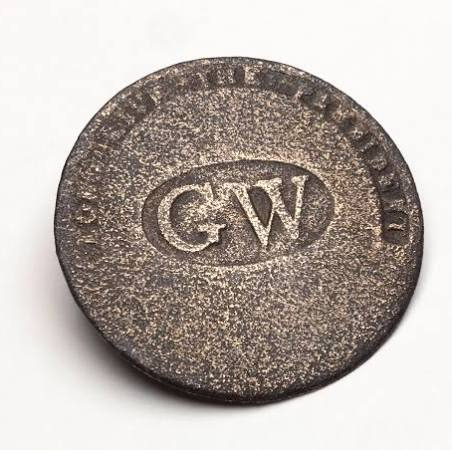
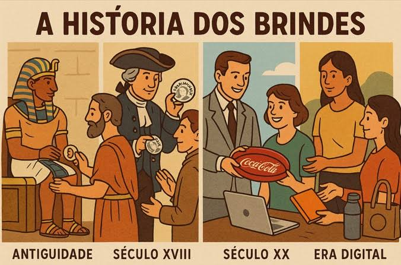
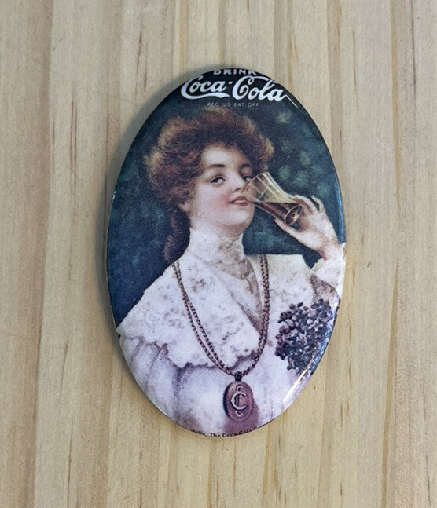
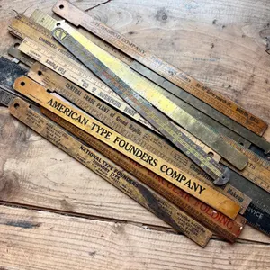

Uma história de meios e objetos
A história dos brindes cruza-se com a da publicidade, mas não se resume a ela. Uma mensagem pode chegar por um cartaz, um jornal, uma emissão ou uma página online; pode também acompanhar um objeto que se guarda e utiliza. Este percurso segue mudanças nos meios e exemplos documentados de objetos, combinando contexto português com casos internacionais identificados.
Meios, objetos e finalidades
Meios de publicidade e comunicação são canais e suportes para divulgar mensagens: letreiros, cartazes, imprensa, rádio, televisão e Internet. Objetos promocionais, comemorativos ou institucionais têm uma presença material e uma finalidade que depende da sua produção e distribuição.
Merchandising no ponto de venda refere-se aqui à apresentação de produtos e mensagens no espaço de compra, como um expositor ou uma organização da montra. Não significa automaticamente um artigo oferecido. Presentes pessoais e recordações podem ter valor afetivo ou comemorativo sem finalidade publicitária. Um objeto produzido para venda também não se torna uma oferta gratuita por conter uma inscrição.
Cronologia da comunicação promocional
Marcos selecionados de contextos diferentes. As datas indicam o âmbito de cada exemplo; os meios continuaram a coexistir.
-
Comunicar na rua, no papel e no comércio
- Meio e mensagem:
- Letreiros identificavam um estabelecimento; cartazes podiam anunciar acontecimentos à distância; folhetos permitiam transportar informação. Um cartão comercial reunia publicidade, contactos e indicações para encontrar uma loja. A Library of Congress situa antecedentes europeus destes cartões entre o final do século XVII e o início do XVIII. ↗
- Objetos e relação com o público:
- A circulação de uma mensagem impressa não implica a oferta de um objeto. Nos Estados Unidos, os botões associados à tomada de posse de Washington, em 1789, permitem observar outra função: mostrar apoio e comemorar um acontecimento. ↗
-
Imprensa, cor e objetos para guardar
- Meio e mensagem:
- Jornais e revistas integravam anúncios na leitura periódica. A reprodução a cores alargou as possibilidades dos cartões comerciais norte-americanos no século XIX. Em Portugal, o n.º 13 da Ilustração Portugueza, de 1906, conserva páginas de anúncios com texto e desenho. ↗ ↗
- Objetos e relação com o público:
- A coleção Marian S. Carson reúne cartões publicitários e colecionáveis de cerca de 1850–1910. A publicidade podia ainda acompanhar uma utilidade: a Madison County Historical Society conserva um calendário publicitário de 1904. Embalagens identificavam o produto adquirido; cartões e calendários podiam circular separadamente. A sua função e distribuição precisam de ser verificadas em cada caso. ↗ ↗
-
A rádio dá voz à mensagem
- Meio e mensagem:
- A voz, a música e os efeitos sonoros permitiam anunciar sem depender da leitura de um suporte. O início das emissões regulares da rádio pública em 1935 é um marco institucional português, não o começo de toda a rádio nem de toda a publicidade radiofónica. O Museu RTP apresenta uma gravação publicitária de 1939, identificada como disco do Rádio Clube Português. ↗ ↗
- Objetos e relação com o público:
- Um anúncio sonoro não é um brinde: a mensagem chega pela emissão, enquanto um objeto fica com quem o recebe ou adquire. A retrospetiva A Magia da Rádio documenta canções publicitárias e a rubrica Teatro Tide. São exemplos de publicidade e associação de um nome a entretenimento; não se confundem com informação noticiosa ou propaganda política. A data do documentário, 1995, não é a data dos anúncios que recupera. ↗
-
Imagem, movimento e som no mesmo anúncio
- Meio e mensagem:
- Depois das emissões experimentais de 1956, a RTP iniciou emissões regulares de televisão em 7 de março de 1957. A publicidade televisiva passou a trabalhar a demonstração visual, a voz, a música e a sequência narrativa. O documentário da RTP sobre a chegada da televisão descreve o desenvolvimento do spot e destas linguagens em Portugal. ↗ ↗ ↗
- Objetos e relação com o público:
- Um produto mostrado num anúncio não é necessariamente oferecido ao público. Objetos físicos, embalagens, cartazes e impressos podiam transportar sinais visuais semelhantes aos apresentados no ecrã. Esta relação ajuda a compreender a coexistência de suportes; não prova que uma campanha concreta tenha distribuído brindes.
-
Da página impressa à página com ligações
- Meio e mensagem:
- A Web foi desenvolvida no CERN em 1989; em 30 de abril de 1993, o CERN colocou o seu software em domínio público. São marcos de uma tecnologia de publicação sobre a Internet, e não a origem de toda a comunicação digital ou a data do primeiro anúncio online. Em Portugal, a cronologia da RTP situa a sua presença online em 1997. ↗ ↗
- Objetos e relação com o público:
- Sites e anúncios online acrescentaram ligações navegáveis e formas de resposta no próprio meio. A mensagem podia remeter para outra página ou para informação atualizada. Um objeto físico podia continuar a acompanhar um evento ou uma ação presencial; a sua existência não depende de substituir os suportes digitais.
-
Vários meios, diferentes formas de contacto
- Meio e mensagem:
- Sites, redes sociais e vídeo online juntam-se a imprensa, rádio e televisão. A série documental da RTP acompanha esta passagem até às formas digitais e à fragmentação da atenção. Não é uma sucessão em que cada meio desaparece quando chega o seguinte. ↗
- Objetos e relação com o público:
- O físico e o digital podem desempenhar funções complementares: divulgar uma iniciativa, permitir uma consulta, assinalar uma participação ou apoiar uma utilização quotidiana. A escolha depende do contexto. A cronologia descreve possibilidades de comunicação, sem atribuir resultados de notoriedade ou vendas.
Galeria de objetos históricos
Do apoio comemorativo aos objetos úteis com publicidade. A ordem começa pelos contextos documentados; as réguas sem data confirmada fecham o conjunto sem lhes atribuir uma posição cronológica exata.
1789 · contexto documentado nos Estados Unidos
Botão de apoio a George Washington

O Smithsonian documenta botões com estas iniciais e inscrição usados por apoiantes de George Washington na sua primeira tomada de posse. Mount Vernon descreve também a produção e venda de botões comemorativos. É um antecedente de objetos que comunicam pertença e comemoração; não deve ser classificado como brinde empresarial moderno nem como oferta gratuita sem prova. ↗ ↗
Final do século XIX · Coshocton, Ohio, Estados Unidos
Saco publicitário de Coshocton

O relato do curador Bill Carlisle associa Jasper Meek à impressão de sacos de juta com publicidade de uma loja de calçado de Coshocton, no contexto da atividade gráfica local da década de 1880. É um dos primeiros exemplos documentados neste percurso norte-americano de publicidade em sacos úteis, sem estabelecer prioridade mundial. A fonte descreve juta; a presença de lona no exemplar fotografado não está confirmada. ↗
Início do século XX · contexto do tipo de objeto
Espelho de bolso da Coca-Cola

Espelhos publicitários de bolso tornaram-se populares no início do século XX. A entrevista ao historiador e arquivista Phil Mooney confirma que a Coca-Cola usou espelhos e outros acessórios pessoais para colocar a sua identificação em objetos do quotidiano. O exemplo mostra uma utilização histórica destes acessórios como publicidade, sem o apresentar como primeiro do mundo ou atribuir uma época à peça apenas pela imagem. ↗ ↗
Exemplos históricos · datas por confirmar
Réguas de madeira publicitárias

Uma régua junta uma função de medição ao nome de uma empresa, levando a identificação comercial para a mesa de trabalho ou outras tarefas quotidianas. O Powerhouse conserva uma régua publicitária de madeira datada de cerca de 1920, que documenta esta prática. Trata-se de uma comparação histórica: essa data não é atribuída às réguas fotografadas. A posição final na galeria agrupa exemplos sem data confirmada, não estabelece que sejam posteriores ao espelho. ↗
O que mudou e o que coexistiu
Mudaram os modos de circulação e a experiência do público. Um anúncio impresso pode ser lido e relido; uma emissão organiza voz, música ou imagem ao longo do tempo; uma página online permite seguir ligações e responder no próprio meio. Um saco transporta, um espelho acompanha cuidados pessoais e uma régua ajuda a medir: nestes casos, a mensagem partilha espaço com uma utilidade.
Estas diferenças explicam como os meios podem coexistir. A montra ou o expositor atua no local de compra; a embalagem acompanha o produto; o anúncio divulga; o objeto pode ser guardado. Não se deve inferir, só pela repetição de um nome, que todos estes suportes fizeram parte da mesma campanha ou tiveram a mesma forma de distribuição.
Escolhas atuais e responsabilidade
A produção contemporânea acrescenta perguntas sobre adequação ao uso, vida útil, materiais, reparação e fim de vida. São critérios atuais para escolher e desenvolver objetos, sem os projetar retroativamente sobre as intenções de quem produziu peças históricas.
Como ler as datas e as imagens
Esta é uma cronologia de exemplos selecionados, não uma história universal ou uma sequência de invenções únicas. As datas referem-se aos documentos, instituições ou tipos de objeto indicados. A fonte que documenta uma peça de museu não autentica uma fotografia semelhante. Nas quatro imagens locais, autoria fotográfica, licença e ligação ao registo original continuam por confirmar; os créditos distinguem essa lacuna das fontes históricas.
Continuar o percurso
Para acompanhar o percurso contemporâneo de desenvolvimento e produção, continue em Da ideia à entrega e Máquinas e processos. Para comparar escolhas de um projeto atual, consulte também os materiais e o guia Produto standard ou à medida?.
Fontes e âmbito
As fontes históricas documentam os exemplos identificados; não estabelecem uma origem única.
Fontes consultadas em 22 de outubro de 2026. As fontes de contexto não são créditos fotográficos.
-
Library of Congress ? Trade Cards and Making an Impression
Cartões comerciais na Europa e nos Estados Unidos; funções de identificação, localização e publicidade, e reprodução de imagens.
-
Library of Congress ? Marian S. Carson collection — trade cards and ephemera,
1850–1910
Conjunto norte-americano de cartões publicitários, colecionáveis e outros impressos, datado aproximadamente de 1850 a 1910.
-
Hemeroteca Digital de Lisboa ? Ilustração Portugueza, II série, n.º 13, 1906
Anúncios na edição digitalizada da revista portuguesa. A data refere-se à publicação, não à origem da publicidade impressa.
-
Madison County Historical Society ? Advertising: The Art of Persuasion
Exposição com embalagens, anúncios e um calendário publicitário de 1904, nos Estados Unidos. Não corresponde às réguas da galeria.
-
Smithsonian — National Museum of American History ? Commemorative Clothing
Button, George Washington, 1789
Botões comemorativos usados por apoiantes na primeira tomada de posse. Não autentica nem data o exemplar da fotografia local.
-
George Washington’s Mount Vernon ? Inaugural Buttons
Tipos de botões inaugurais, produção e venda comemorativa; assinala limites de conhecimento sobre quando foram fabricados e usados.
-
Appalachian History — contributo de Bill Carlisle, curador da exposição no
Johnson-Humrickhouse Museum ? Advertising Art Made in Coshocton
História local de impressão e sacos de juta com publicidade de uma loja de calçado. Não prova prioridade mundial nem identifica o exemplar fotografado.
-
UPPERCASE — Janine Vangool ? Celluloid Advertising Mirrors
Fonte editorial especializada sobre a difusão dos espelhos publicitários no início do século XX. Não autentica a fotografia fornecida.
-
Collectors Weekly — entrevista ao historiador e arquivista Phil Mooney ?
Coca-Cola’s Historian and Archivist Talks About His Favorite Frosty Beverage
Testemunho do arquivista sobre espelhos e outros objetos da própria organização como suportes publicitários. Não data o exemplar local nem comprova pioneirismo mundial.
-
Powerhouse Collection, objeto 86/1451 ? Ruler advertising Johnson’s Paramount
Talkie Pictures
Régua publicitária de madeira, cerca de 1920, conservada no Powerhouse. É um exemplo comparativo; não está identificada na fotografia local.
-
Museu Virtual RTP ? Philco 39-30T — som: publicidade de 1939
Ficha de um recetor de 1938 acompanhada por publicidade sonora de 1939, disco RCP 1564. As duas datas referem-se a elementos diferentes.
-
RTP Arquivos ? A Magia da Rádio
Documentário retrospetivo de 1995; a descrição identifica anúncios, canções publicitárias e teatro radiofónico. Não data todos os excertos sonoros.
-
RTP ? História — cronologia da RTP
1935: início das emissões regulares da rádio pública; 7 de março de 1957: emissões regulares de televisão da RTP; 1997: presença online da RTP. Não são datas universais dos meios.
-
RTP Play ? Intervalo para Publicidade — A Chegada da Televisão, episódio 3
Síntese documental da publicidade televisiva em Portugal: spot, imagem, som e narrativa. Publicação do episódio em 20 de janeiro de 2026.
-
Museu Virtual RTP ? Uma televisão com história
Emissões experimentais de setembro de 1956 e evolução da televisão portuguesa, incluindo publicidade. Não estabelece uma data mundial para a televisão.
-
CERN ? The birth of the Web
Criação da Web em 1989 no CERN e disponibilização do seu software em domínio público em 30 de abril de 1993. Não documenta o primeiro anúncio online.
-
RTP ? Intervalo para Publicidade — uma história da publicidade em Portugal
Enquadramento da passagem dos pregões e imprensa para cinema, rádio, televisão e comunicação digital; não mede eficácia de campanhas.